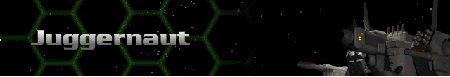
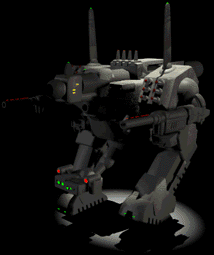

› |
› |
› |
› |
Juggernaut |

|
Chassis: Apocalypse The Juggernaut is a walking fortress with long-range weapons capabilities. When this Herc arrives at its target, the battle is pretty much over. Standard equipment: Crystal Matrix Sensor, an Ion 420 reactor, Lock-On 100 targeting computer, Shield 1500 shield class, Chemical 390 battery, Integrated Environment Life Support, Didrate 35cm armor, and a Pre-Flexive drive system. The Juggernaut is unlimited in regard to weapon upgrades. Available at Tech Level 9. |
 |
Max. Weapons Capabilities
These are all of the weapons which can be mounted to this Herc once you have reached all Technology levels through promotions.
| Energy | Missile | Cannon | Plasma | ELF | Adv. Tech. |
|---|---|---|---|---|---|
| SE400 Laser Cannon | SP Missiles | 260mm Auto Mortar | Fusion Flamer | Lt. ELF | Neutron Gun |
| SC400 Comp. Laser | SG Missiles | 20mm Autocannon | Plasma Mortar | Med. ELF | Thermal Lance |
| SP500 Lt. Pulse Laser | MicroMissiles | 50mm Autocannon | Fusion Mortar | Auto ELF | EMP Blaster |
| SE660 Laser Cannon SE1000 Laser Cannon |
Saturation Missiles | 30mm Chain Gun | Plasma Cannon | Chain ELF | Lt. Particle Gun |
| SC1000 Comp. Laser | Hunter-Killer Missiles | 40mm Ranger Cannon | Plasma Beam | ELF Mortar | Med. Particle Gun |
| SP750 Std. Pulse Laser | Rapid Saturation Rockets | 90mm Accel. Cannon | Fusion Cannon | Hvy. ELF | Particle Beam Wpn. |
| SE700 Laser Gatling | MY Missiles | 120mm Autocannon | Fusion Gatling | EMP Beamer | |
| SP800 Pulse Laser Gatling | Jihad Missiles | EF Cannon | Hvy. Plasma Cannon | Neutron Beam | |
| SCX Hvy. Comp. Laser | SP2 Hvy. Missiles | 100mm Accel. Chain Gun | Thermal Needler | ||
| SP1200 Magna Pulse Laser | Katyusha-Z Rockets | Devastator | Hvy. Particle Gun | ||
| Lt. Comp. Blaster | SPX Rapid Missiles | 280mm ATX | Super Hvy. Particle Gun | ||
| Hvy. Comp. Blaster | Hvy. Saturation Rockets | 210mm X-HEAP | EMP | ||
| Blast Mortar | HOG Missiles | 200mm HEAP | ATN Autocannon | ||
| H-K Rapid Missiles | Fusion Annihilator |